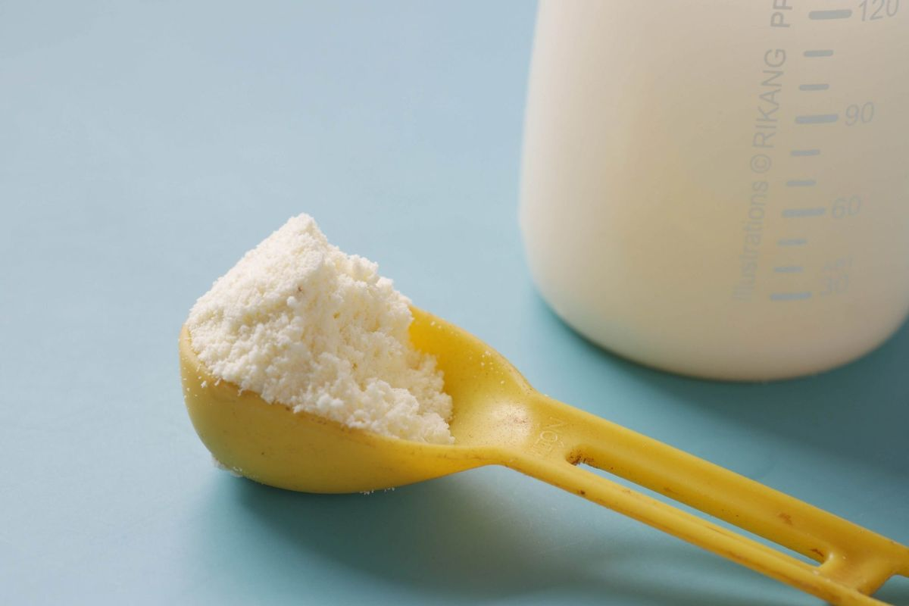
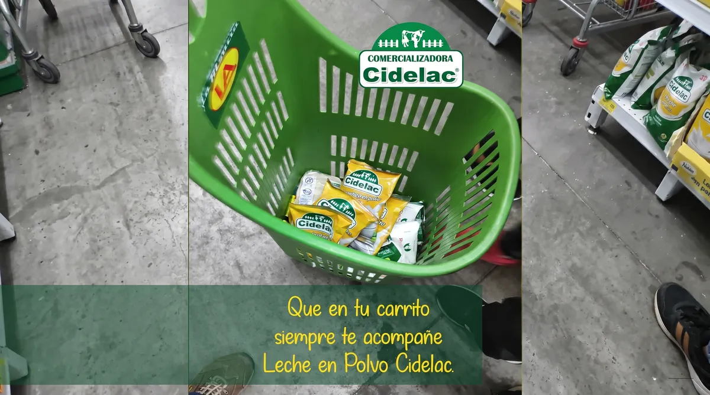
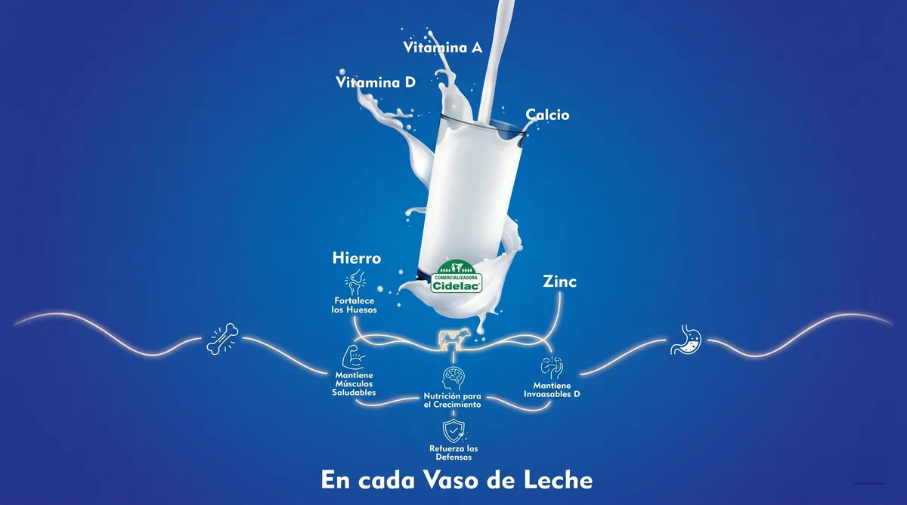
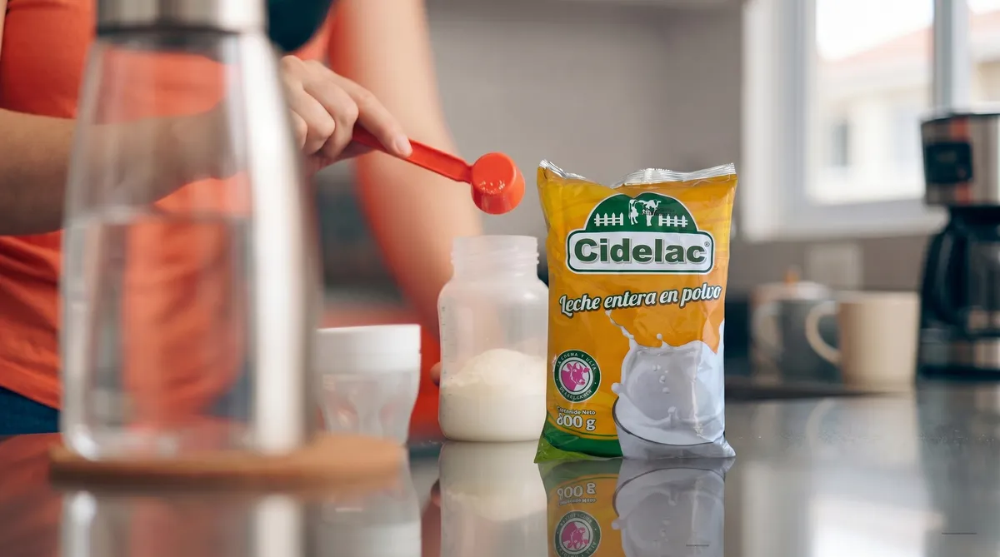
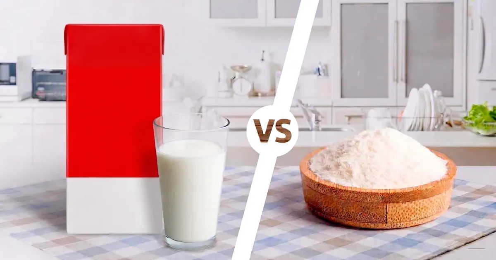

Blog y Noticias
Te damos la bienvenida a nuestro espacio informativo y de aprendizaje. Aquí encontrarás las últimas novedades sobre Comercializadora CIDELAC, consejos prácticos de nutrición avalados por profesionales, tendencias y noticias de interés dentro del dinámico sector lácteo global.

Beneficios y Usos de la Leche en Polvo: Más que un Producto, un Aliado en tu Día a Día
Leer másBeneficios de la Leche en Polvo para la Alimentación Diaria
Leer más
¿Por Qué Comprar Leche en Polvo?
Leer más
Beneficios nutricionales de la leche en polvo
Leer más
Cómo Preparar Correctamente la Leche en Polvo
Leer más